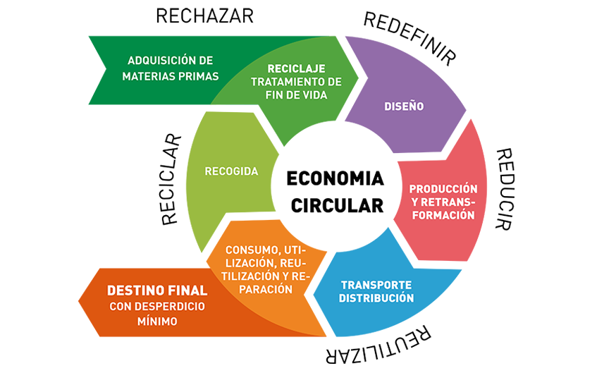
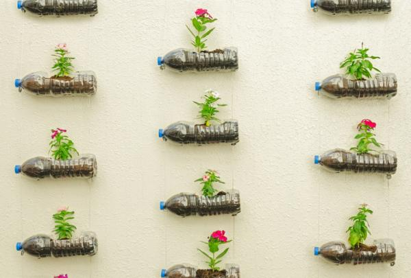
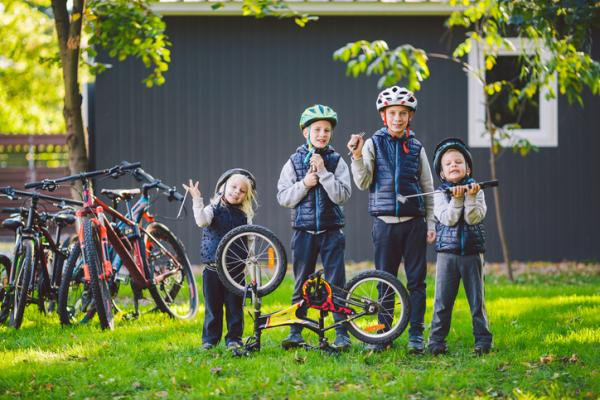
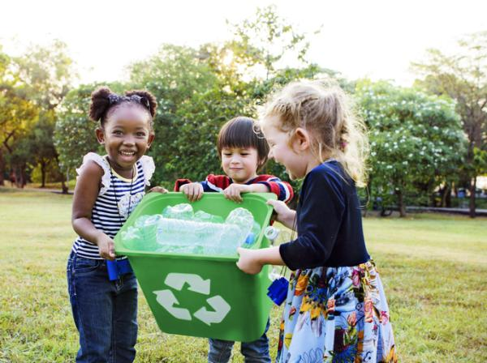
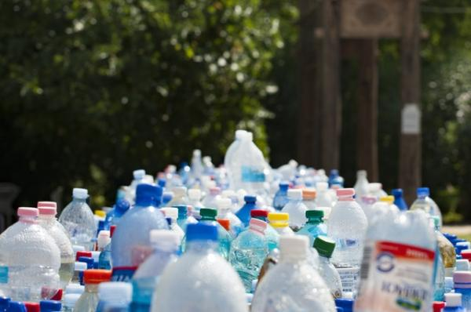

Causas:
- Publicidad masiva
- Obsolescencia programada
- Presión social y cultural
- Créditos y facilidades de pago
La economía circular es un modelo de producción y consumo que implica compartir, alquilar, reutilizar, reparar, renovar y reciclar materiales y productos existentes todas las veces que sea posible para crear un valor añadido. En este modelo, el ciclo de vida de los productos se extiende al máximo, reduciendo residuos al mínimo
Originalmente, el modelo se basaba en las 3R:
Sin embargo, se ha evolucionado hacia un modelo más completo conocido como las 7R:
1. Rediseñar: Pensar productos desde su origen para ser sostenibles.
2. Reducir: Evitar el consumo innecesario.
3. Reutilizar: Usar nuevamente sin transformar.
4. Reparar: Arreglar antes de desechar.
5. Renovar: Actualizar partes del producto para alargar su vida.
6. Reciclar: Recuperar materiales de desecho.
7. Recuperar: Obtener energía o recursos de residuos que no se pueden reciclar.
| Economía Lineal | Economía Circular |
|---|---|
| Uso único de materiales | Reutilización y reciclaje |
| Desechos acumulativos | Cierre de ciclos de materiales |
| Altas emisiones contaminantes | Reducción de impacto ambiental |
El consumismo es una tendencia cultural y económica que promueve la adquisición continua de bienes y servicios, más allá de las necesidades básicas.
La globalización ha expandido el consumismo a escala planetaria, homogeneizando gustos y aumentando la producción en masa.
Es la práctica de diseñar productos con una vida útil limitada para fomentar su reemplazo. Esto impulsa el consumismo y genera más residuos, siendo contrario a los principios de sostenibilidad.
La economía verde es un modelo que busca el desarrollo económico sin deteriorar el medio ambiente.
Promueve la eficiencia energética, energías limpias y una producción menos contaminante.
.png)
El ciclo de vida de un producto incluye todas las etapas que atraviesa un bien desde su creación hasta su disposición final. Analizar cada fase permite identificar oportunidades para reducir el impacto ambiental.
| Fase | Descripción |
|---|---|
| 1. Extracción de materias primas | Obtención de recursos naturales |
| 2. Producción | Fabricación y ensamblaje de productos |
| 3. Distribución | Transporte y entrega del producto |
| 4. Uso | Consumo y utilización del producto por el usuario |
| 5. Fin de vida | Reutilización, reciclaje o disposición final |